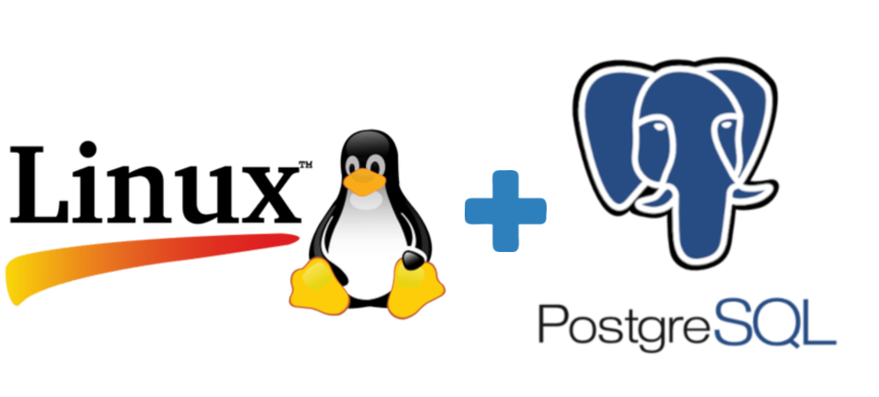
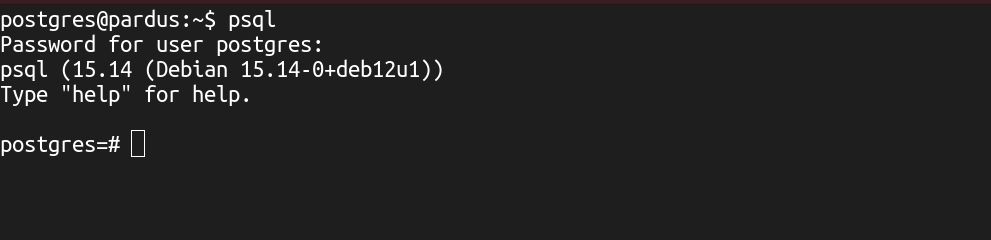

İçindekiler
▸ PostgreSQL Sunucusuna Bağlanma...
▸ Veritabanı İstemcisi / psql...
▸ Temel Veritabanı İşlemleri...
▸ Tarih ve Zaman Fonksiyonları...
▸ Metin (String) Fonksiyonları...
Paket indexlerini güncelle.
sudo apt update && sudo apt upgrade -yPsgreSQL kurulumu için Debian/Ubuntu resmi depolarında PostgreSQL paketi hazır geliyor:
xxxxxxxxxxsudo apt install postgresql -yPostgreSQL servisini kontrol etmek için terminale:
xxxxxxxxxxsudo systemctl status postgresqlEğer çalışmıyorsa başlatmak için:
xxxxxxxxxxsudo systemctl start postgresqlSistem açılışında otomatik olarak başlaması için:
xxxxxxxxxxsudo systemctl enable postgresqlPostgreSQL’in veritabanı kümesi (database cluster) dediğimiz şey aslında PostgreSQL’in tüm verilerini, ayarlarını ve iç yapısını tuttuğu bir dizin.
base/→ Tüm veritabanlarının tabloları burada durur. Her veritabanı için bir alt klasör vardır. Her tablo, index, sequence dosya olarak saklanır.
global/→ Tüm cluster’a ait global veriler (ör. kullanıcılar, roller, transaction ID’ler).
pg_wal/(eski adıpg_xlog) → Write Ahead Log dosyaları; veri bütünlüğünü sağlamak için yapılan değişikliklerin günlükleri.
pg_multixact/→ Çoklu transaction bilgileri.
pg_tblspc/→ Tablespace’lere (farklı disklere/veri yollarına ayrılan alanlar) sembolik linkler.
pg_stat/→ İstatistik bilgileri.
pg_logical/→ Mantıksal replikasyon için kullanılan bilgiler.
pg_commit_ts/→ Commit timestamp verileri.
pg_subtrans/→ Transaction alt-id bilgileri.
PG_VERSION→ Bu kümenin hangi PostgreSQL sürümüne ait olduğunu gösterir (ör.15).
postgresql.conf→ Sunucunun ana yapılandırma dosyası. (Port, shared_buffers, logging vs. ayarlar).
pg_hba.conf→ Kimlik doğrulama kuralları (hangi IP’den kim, hangi yöntemle bağlanabilir).
pg_ident.conf→ Sistem kullanıcıları ile PostgreSQL kullanıcılarını eşleştirme.
postmaster.pid→ Sunucu çalışırken PID (process ID) bilgisini tutar.
PostgreSQL varsayılan veritabanı kümesinin (data cluster) konumu işletim sistemine ve kurulum yöntemine göre değişir.
Debian / Ubuntu / Pardus dağıtımlarında (apt ile kurulum):
xxxxxxxxxx/var/lib/postgresql/<version>/main
RedHat / CentOS / Fedora dağıtımlarında (yum/dnf ile kurulum):
xxxxxxxxxx/var/lib/pgsql/<version>/data
Kaynaktan derlediysen (
make install) kurulum sırasındainitdbçalıştırırken verdiğin-Dparametresine göre belirlenir.
xxxxxxxxxxinitdb -D /usr/local/pgsql/datapostgres kullanıcısındayken terminale psql -U postgres -c "SHOW data_directory;" komutu girilir.PostgreSQL’de veritabanı (DB) ve tablo (nesne) kimliklerini (OID) öğrenmek için:
xpostgres=# SELECT datname, oid FROM pg_database WHERE datname = 'db'; datname | oid ----------+------- db | 16448 (1 row)
-- PostgreSQL’in sistem kataloğu olan pg_database tablosundan bilgi çeker. pg_database tüm veritabanlarının kayıtlarını tutar.-- /var/lib/postgresql/<version>/main/base/ konumunda ilgili veritabanın oid numarası ile ilgili klasörde veritabanı bilgileri bulunur.
postgres=# SELECT relname, oid FROM pg_class WHERE relname = 'tablo'; relname | oid -----------+------- tablo | 16449(1 row)
-- pg_class adlı sistem kataloğunda sorgulama yapar. pg_class tabloların, görünümlerin, dizinlerin vs. meta verilerini tutar.PostgreSQL hangi IP’den dinlediğini aşağıdaki komut ile sorgulunabilir!
xxxxxxxxxxsudo ss -ltnp | grep 5432127.0.0.1:5432 gibi olmalı. Eğer hiç çıkmıyorsa PostgreSQL çalışmıyor demektir.
postgresql.conf ayar dosyası /etc/postgresql/<version>/main/postgresql.conf yada /var/lib/pgsql/data/postgresql.conf konumunda bulunur:pg_hba.confxxxxxxxxxxpostgres=# \c vt ahmetpconnection to server on socket "/var/run/postgresql/.s.PGSQL.5432" failed: FATAL: Peer authentication failed for user "ahmetp"Previous connection keptPostgreSQL’de pg_hba.conf dosyası bağlantıların nasıl doğrulanacağını belirler. Bu durumda "ahmetp" kullanıcısı için peer yöntemi geçerli.
Eğer peer aktifse: PostgreSQL, sistemde oturum açtığın Linux kullanıcısı adı ile PostgreSQL kullanıcı adının aynı olmasını ister.
Linux’ta "ahmet" kullanıcısıyla, ama PostgreSQL’de "ahmetp" ile bağlanmak istiyorsun → eşleşme yok → FATAL: Peer authentication failed.
Bağlanabilmek için pg_hba.conf dosyasını düzenlemiz gerekir.
Dosya genelde bu konumda olur:
/etc/postgresql/<sürüm>/main/pg_hba.conf
İçinde şuna benzer satır vardır:
xxxxxxxxxxlocal all all peerBunu şu şekilde değiştir:
xxxxxxxxxxlocal all all md5
Sonra PostgreSQL’i yeniden başlat:
xxxxxxxxxxsudo systemctl restart postgresql
ahmet@pardus:~$ sudo suKomutu ile root kullanıcısına geçilir.
root@pardus:~# su - postgresKomutu ile postgres kullanıcısına geçilir.
postgres@pardus:~$ psqlKomutu ile PosgreSQL sunucusuna bağlanılır.

Yada PostgreSQL oturumuna kısayoldan bağlanmak için:
xxxxxxxxxxahmet@pardus:~$ sudo -u postgres psqlNot : PostgreSQL kurulunca varsayılan olarak "postgres" adında bir kullanıcı ve bu kullanıcıya ait "postgres" adında yeni bir veritabanı geliyor.
PostgreSQL sunucu interaktif terminal istemcisidir. PostgreSQL sunucuda sorgu çalıştırma, sorgu sonuçlarını görüntüleme, kabuk parametreleri ile dosya veya komut gönderme, betik içerisinde kullanarak otomatik işlemler yaptırabilir.
xxxxxxxxxxpsql [seçenekler...] [veritabanı[kullanıcı]]psql komutu için kullanılan parametreler:| Parametre | Açıklama | Örnek Kullanım |
|---|---|---|
-h | Bağlanılacak sunucunun hostname/IP adresi | psql -h 192.168.1.10 |
-p | PostgreSQL port numarası (varsayılan: 5432) | psql -p 5432 |
-U | Bağlanılacak kullanıcı adı | psql -U postgres |
-d | Bağlanılacak veritabanı adı | psql -d testdb |
-W | Parolayı girmeye zorlar | psql -U user -W |
-f | Bir SQL dosyasını çalıştırır | psql -d db -f script.sql |
-c | Tek bir SQL komutu çalıştırır | psql -d db -c "SELECT * FROM users;" |
-v | Değişken tanımlama | psql -v var=123 -f script.sql |
-X | psql başlangıç dosyası (.psqlrc) yüklenmesin | psql -X |
-A | Hizalamayı kapatır (alignment off) | psql -A -c "SELECT * FROM t" |
-t | Sadece satırları gösterir, başlık/format yok | psql -t -c "SELECT now()" |
-o | Komut çıktısını dosyaya yazdırır | psql -U postgres -d postgres -o sonuc.txt -c "SELECT * FROM ogrenciler;" |
--help veya -? | Yardım ekranı | psql --help veya psql -? |
--version veya -V | Sürüm bilgisini gösterir | psql --version veya psql -V |
Kullanıcı/parola ile TCP üzerinden veritabanına bağlanma:
xxxxxxxxxx$ psql -h 127.0.0.1 -U user -W -d db_namePassword for user user:psql (11.5)Type "help" for help.
db_name=>Etkileşimli (interaktif) kabuk kullanma:
xxxxxxxxxxpsql (11.5)Type "help" for help.postgres=# \c db_nameYou are now connected to database "db_name" as user "postgres".db_name=# SELECT * FROM table_name;
Etkileşimsiz kabuk kullanma (dışardan komut yollama):
xxxxxxxxxx$ psql -U user -c 'SELECT * FROM table_name;' db_nameÇıktıyı dosyaya kaydetme:
xxxxxxxxxx$ psql -U user -c 'SELECT * FROM table_name;' db_name > sonuc
Komut çıktısını kullanma (pipe):
xxxxxxxxxx$ echo '\c db_name \\ SELECT * FROM table_name;' | psql
Dosyayı girdi olarak kullanma:
xxxxxxxxxx$ psql -U user db_name < sorgu.sql
Öntanımlı olarak sql sorgularının çıktıları sql biçeminde gelir psql üzerinden csv biçiminde çıktı almak için:
xxxxxxxxxx$ psql -U user -d db_name -A -F"," -c "select * from table_name;" > dosya.csv
psql istemci temel komutları:| Komut | Açıklama | Komut | Açıklama |
|---|---|---|---|
\l | Veritabananlarını listeleme | \q | Çıkış |
\c | Belirtilen veritabanına geçme | \help (\?) | Yardım |
\dt | Tabloları listeleme | \copyright | Lisans bilgileri |
\dT | Veri tiplerini listeleme | \conninfo | Sunucu bağlantı bilgileri |
\du (\dg) | Veritabanı rol/kullanıcı listeleme | \password | Rol parolası belirleme |
\dx | Yüklü olan eklentileri listeleme | \encoding | Tanımlı olan karakter kodlaması |
\dn | Mevcut şemaları listeleme | \s | Geçmiş komutları listeleme |
Mevcut veritabanlarını listeleme:
xxxxxxxxxxpostgres=# \l List of databases Name | Owner | Enc. | Collate | Ctype | Access privileges-----------+----------+------+-------------+-------------+--------------+ postgres | postgres | UTF8 | en_US.UTF-8 | en_US.UTF-8 | template0 | postgres | UTF8 | en_US.UTF-8 | en_US.UTF-8 | =c/postgres + postgres=CTc/postgres template1 | postgres | UTF8 | en_US.UTF-8 | en_US.UTF-8 | =c/postgres + postgres=CTc/postgres(3 rows)Yeni bir veritabanı oluşturma:
xxxxxxxxxxpostgres=# CREATE DATABASE db_name;CREATE DATABASE
\c db_name: Diğer veritabana geçiş için kullanılır.
\l+: Mevcut veritabanlarının size, tablespace ve description alanlarınıda listeler.
\i dosya: PostgreSQL sunucusuna bağlandığın konumda bulunan script dosyasını çalıştırır.
Sahip belirterek veritabanı oluşturma:
xxxxxxxxxxpostgres=# CREATE DATABASE db_name OWNER user;CREATE DATABASExxxxxxxxxxpostgres=# CREATE DATABASE db_name WITH OWNER = postgres TEMPLATE = template0 ENCODING = 'UTF8' LC_COLLATE = 'C' LC_CTYPE = 'C' CONNECTION LIMIT = 20;Veritabanı sahipliğini değiştirmek için:
xxxxxxxxxxpostgres=# ALTER DATABASE db_name OWNER TO user;ALTER DATABASEVeritabanının ismini değiştirmek için:
xxxxxxxxxxpostgres=# ALTER DATABASE db_name RENAME TO new_db_name;ALTER DATABASEVeritabanını silmek için:
xxxxxxxxxxpostgres=# DROP DATABASE db_name;DROP DATABASE
SELECT datname FROM pg_database;: Sistemdeki mevcut veritabanlarını listeleme sorgusu.
SELECT usename,usesysid FROM pg_user;: Sistemdeki kullanıcıadı ve id bilgileri listelenir.
SELECT * FROM pg_stat_activity WHERE datname='postgres';: Adı verilen veritabanına bağlı connectionları listeler.
| Veri Türü | Kapladığı Boyut | Min / Max Değeri | Örnek Kullanım |
|---|---|---|---|
| smallint | 2 byte | –32768 → 32767 | age smallint |
| integer (int) | 4 byte | –2,147,483,648 → 2,147,483,647 | id int |
| bigint | 8 byte | –9,22e18 → 9,22e18 | population bigint |
| decimal / numeric(p,s) | Değişken (yakl. 2 byte / 4 digit) | Hassasiyet sınırsız | price numeric(12,2) |
| real (kayan noktalı) sayı | 4 byte | ~6 hane hassasiyet | temperature real |
| double precision (kayan noktalı) sayı | 8 byte | ~15 hane hassasiyet | rating double precision |
| serial | 4 byte (int) | Otomatik artan tamsayı | id serial |
| bigserial | 8 byte | Daha büyük otomatik artan tamsayı | id bigserial |
| Veri Türü | Boyut | Max Uzunluk | Örnek |
|---|---|---|---|
| text | Değişken (1B–1GB) | 1 GB (yaklaşık) | description text |
| varchar(n) | Değişken | n karakter | name varchar(255) |
| char(n) | n byte | n karakter (sabit) | code char(10) |
| varchar (sınırsız) | Değişken | 1 GB | name varchar |
| citext | Değişken | 1 GB | email citext (büyük/küçük duyarsız) |
| Tür | Boyut | Açıklama |
|---|---|---|
| boolean | 1 byte | true / false |
Örnek:
xxxxxxxxxxis_active boolean | Veri Türü | Boyut | Aralık | Örnek |
|---|---|---|---|
| date | 4 byte | MÖ 4713 – MS 5874897 | birthdate date |
| time | 8 byte | 00:00 → 24:00 | start_at time |
| time with time zone | 12 byte | start_at timetz | |
| timestamp | 8 byte | MÖ 4713 – MS 294276 | created_at timestamp |
| timestamptz | 8 byte | created_at timestamptz | |
| interval | 16 byte | ±178 milyon yıl | duration interval |
| Tür | Boyut | Max | Örnek |
|---|---|---|---|
| json | Değişken | 1 GB | data json |
| jsonb | Değişken | 1 GB | meta jsonb |
| Tür | Boyut | Limit | Örnek |
|---|---|---|---|
| int[] , text[] , varchar[] | Değişken | Her eleman max 1 GB | tags text[] |
Dizi elemanları kendi veri türünün boyutuna bağlıdır.
| Tür | Boyut | Açıklama | Örnek |
|---|---|---|---|
| uuid | 16 byte | Global benzersiz kimlik | id uuid DEFAULT gen_random_uuid() |
| Tür | Boyut | Örnek |
|---|---|---|
| money | 8 byte | amount money |
(Tavsiye edilen numeric(12,2))
| Tür | Boyut | Limit | Örnek |
|---|---|---|---|
| bytea | Değişken | 1 GB | file bytea |
Dosya, resim, video saklamak için.
| Tür | Boyut | Açıklama |
|---|---|---|
| inet | 7–19 byte | IP adresi |
| cidr | 7–19 byte | IP blokları |
| macaddr | 6 byte | MAC adresi |
| macaddr8 | 8 byte | |
| tsvector | Değişken | Full-text search |
| tsquery | Değişken | Text search |
| point | 16 byte | (x,y) |
| line | 32 byte | Sonsuz çizgi |
| lseg | 32 byte | Çizgi parçası |
| box | 32 byte | Dikdörtgen |
| circle | 24 byte | Daire |
| polygon | Değişken | Çokgen |
| enum | 4 byte | Sabit değerler |
Örnek enum:
xxxxxxxxxxCREATE TYPE status AS ENUM ('active','passive');| Tür | Boyut | Limit |
|---|---|---|
| xml | Değişken | 1 GB |
| Tür | Boyut | Açıklama |
|---|---|---|
| oid | 4 byte | Sistem nesne ID’si |
| regclass, regtype, regproc ... | 4 byte | Sistem referansları |
Bir veritabanı içinde yeni bir tablo oluşturma:
xxxxxxxxxxpostgres=# CREATE TABLE personel ( ad varchar(40), soyad varchar(40), kidem int, uid int PRIMARY KEY);CREATE TABLETabloları listeleme:
xxxxxxxxxxpostgres=# \dt List of relations Schema | Name | Type | Owner--------+----------+-------+---------- public | personel | table | postgres(1 row)Tablonun ismini değiştirmek için:
xxxxxxxxxxpostgres=# ALTER TABLE tablo_adı RENAME TO yeni_tablo_adı;ALTER TABLETablo silme:
xxxxxxxxxxpostgres=# DROP TABLE table_name;DROP TABLETablo sahipliğini değiştirmek için:
xxxxxxxxxxpostgres=# CREATE USER yildirim;CREATE ROLEpostgres=# ALTER TABLE personel OWNER TO yildirim;ALTER TABLEpostgres=# \dt List of relations Schema | Name | Type | Owner--------+----------+-------+------- public | personel | table | yildirimTablo yapısını gösterme:
xxxxxxxxxxpostgres=# \d personel Table "public.personel" Column | Type | Modifiers--------+-----------------------+----------- ad | character varying(40) | soyad | character varying(40) | kidem | integer | uid | integer | not nullIndexes: "personel_pkey" PRIMARY KEY, btree (uid)Tabloyu düzenleme: Yeni sütun ekleme:
xxxxxxxxxxpostgres=# ALTER TABLE public.personelADD COLUMN yas INT;Tabloyu düzenleme: Bir sütunun tipini değiştirme:
xxxxxxxxxxpostgres=# ALTER TABLE public.personelALTER COLUMN ad TYPE character varying (50);Tabloyu düzenleme: Bir sütun silme:
xxxxxxxxxxpostgres=# ALTER TABLE public.personelDROP COLUMN kidem;Tabloyu düzenleme: Bir sütunun adını değiştirme:
xxxxxxxxxxpostgres=# ALTER TABLE tablo_adiRENAME COLUMN eski_isim TO yeni_isim;Tabloya bir satır ekleme:
xxxxxxxxxxpostgres=# INSERT INTO personel VALUES('John','Doe',5,01);INSERT 0 1
-- Sadece belirli kolonlar için ekleme yapılacak ise:postgres=# INSERT INTO personel(ad,soyad) VALUES('John','Doe');INSERT 0 1Tabloya birden fazla satır ekleme:
xxxxxxxxxxpostgres=# INSERT INTO personel VALUES ('Jane','Doe',1,02), ('Richard','Roe',3,03), ('Fred','Bloggs',7,04), ('Juan','Perez',11,05);INSERT 0 4Satır sorgulama:
xxxxxxxxxxpostgres=# SELECT * FROM personel; ad | soyad | kidem | uid---------+--------+-------+----- John | Doe | 5 | 1 Jane | Doe | 1 | 2 Richard | Roe | 3 | 3 Fred | Bloggs | 7 | 4 Juan | Perez | 11 | 5(5 rows)
postgres=# SELECT ad,soyad FROM personel; ad | soyad---------+-------- John | Doe Jane | Doe Richard | Roe Fred | Bloggs Juan | Perez (5 rows)ALIAS kullanımıPostgreSQL’de ALIAS (takma ad), tablo veya kolon adlarını geçici olarak yeniden adlandırmak için kullanılır. Amaç sorguyu daha okunabilir, kısa ve özellikle JOIN’lerde daha net hale getirmektir.
xxxxxxxxxxSELECT kolon_adı AS alias_adıFROM tablo_adı;
ASopsiyoneldir, yazılmasa da çalışır.
alias_adıboşluk içerecek ise çift tırnaklar arasına yazılmalıdır.
xxxxxxxxxxSELECT first_name AS ad, last_name AS soyadFROM users;
SELECT salary * 12 aylik_maasFROM employees;xxxxxxxxxxSELECT * FROM tablo_adı AS t;xxxxxxxxxxSELECT u.username, u.emailFROM users AS u;➡️ Bundan sonra users.username yerine u.username kullanılır.
WHERE kullanımıPostgreSQL’de WHERE ifadesi, sorgu sonucunu belirli koşullara göre filtrelemek için kullanılır.
xxxxxxxxxxSELECT * FROM table_nameWHERE kosul;Örnek:
xxxxxxxxxxSELECT * FROM usersWHERE age = 25;→ Yaşı 25 olan kayıtları getirir.
| Operatör | Açıklama |
|---|---|
= | Eşittir |
!= veya <> | Eşit değil |
> | Büyük |
< | Küçük |
>= | Büyük eşit |
<= | Küçük eşit |
Örnek:
xxxxxxxxxxSELECT name, salary FROM employeesWHERE salary >= 50000;AND, OR, NOT)xxxxxxxxxxSELECT * FROM ordersWHERE status = 'paid' AND total_amount > 1000;
SELECT * FROM usersWHERE city = 'Ankara' OR city = 'İstanbul';
SELECT * FROM usersWHERE NOT is_active;xxxxxxxxxx=== Syntax ===SELECT *, Distinct(Tekrarsız Veriler), Top(istenilen sayıda Listeleme), Min,Max,Avg(Ortalama),Sum, CountFROM `databaseAdi`.`tabloAdi`WHERE (BIL - Between, In, Like)ORDER BY (Sıralama)JOIN (Birden fazla tabloda ortak vb yapıları listelemek)GROUP BY (Belli kolon için gruplama yapmak içindir)HAVING (Filtreleme) (Sum, Avg, Count, Min, Max)
IN KullanımıBirden fazla değeri kontrol etmek için:
xxxxxxxxxxSELECT * FROM productsWHERE category IN ('Elektronik', 'Bilgisayar', 'Telefon');BETWEEN KullanımıBelirli bir aralık için:
xxxxxxxxxxSELECT * FROM ordersWHERE order_date BETWEEN '2024-01-01' AND '2024-12-31';LIKE ve ILIKE (Metin Arama)% → herhangi bir karakter dizisi
_ → tek karakter
xxxxxxxxxx-- kullanıcı ismi `ahmet` ile başlayan kayıtlarSELECT * FROM usersWHERE username LIKE 'ahmet%';
-- kullanıcı ismi `can` ile bitmeyen kayıtlarSELECT * FROM usersWHERE username NOT LIKE '%can';ILIKE → büyük/küçük harf duyarsızdır
xxxxxxxxxxSELECT * FROM usersWHERE email ILIKE '%gmail.com';IS NULL / IS NOT NULLxxxxxxxxxxSELECT * FROM usersWHERE phone IS NULL;
SELECT * FROM usersWHERE phone IS NOT NULL;WHERExxxxxxxxxxSELECT * FROM logsWHERE created_at >= NOW() - INTERVAL '7 days';xxxxxxxxxx-- fiyat beşyüzden küçük olan ürünler listelenir.SELECT * FROM productsWHERE price < 500;
-- fiyat * miktar binden büyük olan ürünler listelenir.SELECT * FROM productsWHERE price * quantity > 1000;WHERExxxxxxxxxxSELECT * FROM employeesWHERE department_id IN ( SELECT id FROM departments WHERE name = 'IT');WHERE koşulunda kullanılan kolonlara index eklemek performansı ciddi artırır.
xxxxxxxxxxCREATE INDEX idx_users_email ON users(email);WHERE → filtreleme
AND / OR / NOT → mantık
IN / BETWEEN / LIKE / IS NULL → sık kullanılan yardımcılar
ILIKE → case-insensitive arama (PostgreSQL’e özgü)
ORDER BY KullanımıORDER BY, sorgu sonuçlarını belirli bir kolona veya ifadeye göre sıralamak için kullanılır.
xxxxxxxxxxSELECT kolon1, kolon2 FROM tablo_adıORDER BY kolon_adı;Varsayılan olarak sıralama artan (ASC) şeklindedir.
xxxxxxxxxx-- Artan sıralama (varsayılan)SELECT * FROM usersORDER BY age ASC;
-- Azalan sıralamaSELECT * FROM usersORDER BY age DESC;Önce department, aynı department içindekileri ise salary'e göre sıralar:
xxxxxxxxxxSELECT * FROM employeesORDER BY department ASC, salary DESC;SELECT listesindeki kolonların sıra numarası kullanılabilir:
xxxxxxxxxxSELECT name, age, city FROM usersORDER BY 2 DESC; -- age kolonu⚠️ Okunabilirlik açısından genellikle kolon adı kullanılması önerilir.
xxxxxxxxxxSELECT * FROM usersORDER BY LOWER(username);PostgreSQL'de varsayılan davranış:
ASC → NULL en sonda
DESC → NULL en başta
xxxxxxxxxx-- NULL'ları en sona atSELECT * FROM productsORDER BY price ASC NULLS LAST;
-- NULL'ları en başa alSELECT * FROM productsORDER BY price DESC NULLS FIRST;xxxxxxxxxxSELECT name, price, quantity, price * quantity AS total FROM ordersORDER BY total DESC;ORDER BY + LIMITEn sık kullanılan senaryolardan biri:
xxxxxxxxxx-- En pahalı 5 ürünSELECT * FROM productsORDER BY price DESCLIMIT 5;ORDER BY Nerede Kullanılır?ORDER BY her zaman sorgunun en sonunda yer alır:
xxxxxxxxxxSELECT ...FROM ...WHERE ...GROUP BY ...HAVING ...ORDER BY ...LIMIT ...;ORDER BY → sonuçları sıralar
ASC / DESC → artan / azalan
Birden fazla kolonla sıralama mümkündür
NULLS FIRST | LAST ile NULL kontrol edilir
Performans için büyük tablolarda index kullanımı önemlidir
Sütun Güncelleme:
xxxxxxxxxxpostgres=# UPDATE ogrenciler SET email='ersin-dari@yahoo.com' WHERE id=7;UPDATE 1Not :
WHEREile koşul belirtmezsekogrencilertablosundaki bütün
Satır silme:
xxxxxxxxxxpostgres=# DELETE FROM ogrenciler WHERE id=7;DELETE 1Not :
WHEREile koşul belirtmezsekogrencilertablosundaki bütün kayıtlar silinir.
PostgreSQL’de index işlemleri; sorguları hızlandırmak, tablo içindeki belirli kolonlara göre hızlı arama yapabilmek için kullanılır.
Index, bir tablo içinde belirli sütunlara göre arama / filtreleme / sıralama işlemlerini hızlandıran veri yapılarıdır. Bir nevi kitabın arka dizini gibi çalışır.
Temel kullanım
xxxxxxxxxxCREATE INDEX idx_adi ON tablo_adi (kolon_adi);Örnek:
xxxxxxxxxxCREATE INDEX idx_users_email ON users (email);📌 Bu, users tablosunda email üzerinden aramayı hızlandırır.
Aynı değerin iki kez girilmesini engeller.
xxxxxxxxxxCREATE UNIQUE INDEX idx_users_tc ON users (tc_kimlik);xxxxxxxxxxCREATE INDEX idx_orders_user_date ON orders (user_id, order_date);
📌 Sorgu hem user_id hem de order_date içeriyorsa hızlanır.
xxxxxxxxxxDROP INDEX idx_adi;
Örnek:
xxxxxxxxxxDROP INDEX idx_users_email;
Sadece açıklayıcı yapmak istersen:
xxxxxxxxxx\d tablo_adiveya
xxxxxxxxxxSELECT * FROM pg_indexes WHERE tablename = 'users';Sorgu index kullanıyor mu görmek için:
xxxxxxxxxxEXPLAIN ANALYZE SELECT * FROM users WHERE email = 'a@b.com';Çıktıda → Index Scan yazıyorsa index kullanılıyor demektir.
| Index Türü | Açıklama | Kullanım Alanı |
|---|---|---|
| B-Tree | Varsayılan index | Eşitlik, <, >, ORDER BY |
| Hash | Sadece eşitlik için | WHERE id = 5 |
| GIN | JSONB, Array | JSON içi arama |
| GiST | Geometrik, tam metin | Konum / yakınlık |
| BRIN | Çok büyük (milyonlarca satır), sıralı veriler | Zaman serisi |
xxxxxxxxxxCREATE INDEX idx_products_data ON products USING GIN (data);Tablonun tamamı yerine sadece belirli bir kısmında index oluşturur.
xxxxxxxxxxCREATE INDEX idx_active_users ON users (email)WHERE active = true;Tablo çok küçükse (1–2 bin satır)
Kolon çok fazla tekrar eden değerler içeriyorsa (ör: cinsiyet)
Sürekli güncellenen kolonlar (index güncelleme maliyeti yüksek)
Bir tablodan başka bir tabloya o tablonun Primary Key alanı aracılığıyla referans verilir.
xxxxxxxxxxpagila=# CREATE TABLE items( code int PRIMARY KEY, name text, price numeric(10,2));CREATE TABLE
pagila=# CREATE TABLE orders( no int PRIMARY KEY, date date, amount numeric, item_code int REFERENCES items (code));CREATE TABLEReferans veren tablo:
xxxxxxxxxxpostgres=# \d orders Table "public.orders" Column | Type | Modifiers-----------+---------+----------- no | integer | not null date | date | amount | numeric | item_code | integer |Indexes: "orders_pkey" PRIMARY KEY, btree (no)Foreign-key constraints: "orders_item_code_fkey" FOREIGN KEY (item_code) REFERENCES items(code)
PostgreSQL’de referans verme işlemi, yani FOREIGN KEY (yabancı anahtar) tanımlamak; bir tablodaki bir kolonun başka bir tablodaki PRIMARY KEY/UNIQUE bir kolona bağlı olmasını sağlar. Bu, veri bütünlüğü için çok önemlidir.
✔ İki tablo düşünelim:
users (ana tablo)
orders (users tablosunu referanslayan alt tablo)
users tablosu
xxxxxxxxxxCREATE TABLE users ( id SERIAL PRIMARY KEY, name TEXT);orders tablosu (FOREIGN KEY ile)
xxxxxxxxxxCREATE TABLE orders ( id SERIAL PRIMARY KEY, user_id INT, FOREIGN KEY (user_id) REFERENCES users(id));🔹 Burada orders.user_id → users.id şeklinde referans verildi.
Eğer tabloyu önceden oluşturduysan:
xxxxxxxxxxALTER TABLE ordersADD CONSTRAINT fk_orders_userFOREIGN KEY (user_id) REFERENCES users(id);xxxxxxxxxxALTER TABLE ordersDROP CONSTRAINT fk_orders_user;Referans verilen veride değişiklik veya silme olunca ne yapılacağını belirler.
✔ ON DELETE CASCADE
Ana tablo silinince alt tablodaki ilgili kayıtlar da otomatik silinir.
xxxxxxxxxxFOREIGN KEY (user_id)REFERENCES users(id)ON DELETE CASCADE;✔ ON DELETE SET NULL
Ana tablo silinince alt tablodaki değer NULL olur.
xxxxxxxxxxFOREIGN KEY (user_id)REFERENCES users(id)ON DELETE SET NULL;✔ ON DELETE RESTRICT / NO ACTION
Silme engellenir.
xxxxxxxxxxON DELETE RESTRICT;Eğer tabloda iki kolon birlikte PRIMARY KEY ise:
Ana tablo
xxxxxxxxxxCREATE TABLE cities ( country_code TEXT, city_code TEXT, PRIMARY KEY(country_code, city_code));Referans veren tablo
xxxxxxxxxxCREATE TABLE people ( id SERIAL PRIMARY KEY, country_code TEXT, city_code TEXT, FOREIGN KEY (country_code, city_code) REFERENCES cities(country_code, city_code));PostgreSQL, referans veren kolonlara otomatik index oluşturmaz.
Örnek:
xxxxxxxxxxALTER TABLE ordersADD FOREIGN KEY (user_id) REFERENCES users(id);📌 Bu durumda orders.user_id için index önerilir:
xxxxxxxxxxCREATE INDEX idx_orders_user_id ON orders(user_id);xxxxxxxxxx\d ordersveya:
xxxxxxxxxxSELECT tc.table_name, kcu.column_name, ccu.table_name AS foreign_table, ccu.column_name AS foreign_columnFROM information_schema.table_constraints AS tcJOIN information_schema.key_column_usage AS kcu ON tc.constraint_name = kcu.constraint_nameJOIN information_schema.constraint_column_usage AS ccu ON ccu.constraint_name = tc.constraint_nameWHERE constraint_type = 'FOREIGN KEY';SHOW ile belirli bir çalışma parametresinin bilgisi alınabilir:
xxxxxxxxxxpostgres=# SHOW DateStyle; DateStyle_____________ ISO, MDY(1 row)Tüm parametrelerin listesine ve bilgisine erişmek için:
xxxxxxxxxxpostgres=# SHOW ALL; name | setting | description-------------------------+---------+------------------------------------------------- allow_system_table_mods | off | Allows modifications of the structure of ... . . . xmloption | content | Sets whether XML data in implicit parsing ... zero_damaged_pages | off | Continues processing past damaged page headers.(290 rows)SET komutu ile bir parametre çalışma zamanında değiştirilebilir:
xxxxxxxxxxpostgres=# SET timezone='Europe/Rome';SETSET komutu ile değiştirilen parametre sadece o oturumda geçerlidir, oturum kapandığında geçerliliğini kaybeder. Parametrelerin kalıcı olması için postgresql.conf dosyası üzerinde ayarlama yapılmalıdır.
| Fonksiyon | Açıklama | Örnek Kullanım | Örnek Çıktı |
|---|---|---|---|
NOW() | Şu anki tarih ve saati döner (timestamp with time zone) | SELECT NOW(); | 2025-10-20 22:41:32.123+03 |
CURRENT_TIMESTAMP | NOW() ile aynıdır | SELECT CURRENT_TIMESTAMP; | 2025-10-20 22:41:32.123+03 |
CURRENT_DATE | Sadece tarihi döner | SELECT CURRENT_DATE; | 2025-10-20 |
CURRENT_TIME | Sadece saati döner | SELECT CURRENT_TIME; | 22:41:32.123+03 |
LOCALTIMESTAMP | Saat dilimi olmadan döner | SELECT LOCALTIMESTAMP; | 2025-10-20 22:41:32.123 |
TO_CHAR)| Fonksiyon | Açıklama | Örnek Kullanım | Örnek Çıktı |
|---|---|---|---|
TO_CHAR(tarih, 'YYYY-MM-DD') | Tarihi belirtilen biçime çevirir | SELECT TO_CHAR(NOW(), 'YYYY-MM-DD'); | 2025-10-20 |
TO_CHAR(tarih, 'DD Mon YYYY') | Ay adını içerir | SELECT TO_CHAR(NOW(), 'DD Mon YYYY'); | 20 Oct 2025 |
TO_CHAR(tarih, 'HH24:MI:SS') | Saat biçimi | SELECT TO_CHAR(NOW(), 'HH24:MI:SS'); | 22:45:30 |
TO_CHAR(tarih, 'Day, DD Mon YYYY') | Gün + tarih | SELECT TO_CHAR(NOW(), 'Day, DD Mon YYYY'); | Monday, 20 Oct 2025 |
| Fonksiyon | Açıklama | Örnek Kullanım | Örnek Çıktı |
|---|---|---|---|
TO_DATE(string, format) | String → Date | SELECT TO_DATE('2025-01-15', 'YYYY-MM-DD'); | 2025-01-15 |
TO_TIMESTAMP(string, format) | String → Timestamp | SELECT TO_TIMESTAMP('2025-01-15 10:30', 'YYYY-MM-DD HH24:MI'); | 2025-01-15 10:30:00 |
| İşlem | Kullanım | Açıklama |
|---|---|---|
| Gün ekleme | SELECT NOW() + INTERVAL '5 days'; | 5 gün sonrasını verir |
| Ay çıkarma | SELECT NOW() - INTERVAL '2 months'; | 2 ay öncesini verir |
| Saat ekleme | SELECT NOW() + INTERVAL '3 hours'; | 3 saat ekler |
| Dakika ekleme | SELECT NOW() + INTERVAL '30 minutes'; | 30 dakika ekler |
| Yıl çıkarma | SELECT NOW() - INTERVAL '1 year'; | 1 yıl önceki zamanı verir |
EXTRACT, DATE_PART)| Fonksiyon | Açıklama | Örnek Kullanım | Örnek Çıktı |
|---|---|---|---|
EXTRACT(YEAR FROM tarih) | Yıl bilgisi | SELECT EXTRACT(YEAR FROM NOW()); | 2025 |
EXTRACT(MONTH FROM tarih) | Ay bilgisi | SELECT EXTRACT(MONTH FROM NOW()); | 10 |
EXTRACT(DAY FROM tarih) | Gün bilgisi | SELECT EXTRACT(DAY FROM NOW()); | 20 |
EXTRACT(DOW FROM tarih) | Haftanın günü (0=Pazar) | SELECT EXTRACT(DOW FROM NOW()); | 1 |
DATE_PART('hour', tarih) | Saat bilgisi | SELECT DATE_PART('hour', NOW()); | 22 |
| Fonksiyon | Açıklama | Örnek Kullanım | Örnek Çıktı |
|---|---|---|---|
AGE(t1, t2) | İki tarih arasındaki fark | SELECT AGE('2025-10-20', '2020-10-20'); | 5 years |
AGE(NOW(), dogum_tarihi) | Yaş hesaplama örneği | SELECT AGE(NOW(), '2000-06-15'); | 25 years 4 mons 5 days |
| Fonksiyon | Açıklama | Örnek Kullanım | Örnek Çıktı |
|---|---|---|---|
EXTRACT(EPOCH FROM NOW()) | Şu anki zamanı saniye cinsinden verir | SELECT EXTRACT(EPOCH FROM NOW()); | 1730050000 |
TO_TIMESTAMP(epoch) | Epoch → Timestamp | SELECT TO_TIMESTAMP(1730050000); | 2025-10-20 22:45:00+03 |
xxxxxxxxxx-- 1. Yarının tarihiSELECT CURRENT_DATE + INTERVAL '1 day';
-- 2. 10 gün sonra saat 12:00SELECT CURRENT_DATE + INTERVAL '10 days' + TIME '12:00';
-- 3. Haftanın gününü öğrenSELECT TO_CHAR(NOW(), 'Day');
-- 4. Bugün Pazartesi mi?SELECT EXTRACT(DOW FROM CURRENT_DATE) = 1;
-- 5. Ayın kaçıncı haftasıSELECT EXTRACT(WEEK FROM CURRENT_DATE);
----------------------------------------------------------------------------------SELECT *FROM tablo_adıWHERE EXTRACT(YEAR FROM doğum_tarihi) = 1990;-- Bu sorgu, doğum tarihi 1990 olan tüm kayıtları getirir.
----------------------------------------------------------------------------------SELECT *FROM tablo_adıWHERE EXTRACT(YEAR FROM doğum_tarihi) IN (1985, 1990, 1995);-- Bu sorgu, doğum tarihi 1985, 1990 veya 1995 olan tüm kayıtları getirir.
----------------------------------------------------------------------------------SELECT *FROM tablo_adıWHERE doğum_tarihi BETWEEN '1980-01-01' AND '1990-12-31';-- Bu sorgu, doğum tarihi 1980 ile 1990 yılları arasında olan tüm kayıtları getirir./*AGE() Fonksiyonu: Eğer doğum tarihinden yaş hesaplamak isterseniz, AGE() fonksiyonunu kullanabilirsiniz. Bu fonksiyon, iki tarih arasındaki farkı hesaplar.*/| Fonksiyon | Açıklama | Örnek | Çıktı |
|---|---|---|---|
LENGTH(text) | Metindeki karakter sayısını döner (byte sayabilir). | SELECT LENGTH('Ahmet'); | 5 |
CHAR_LENGTH(text) veya CHARACTER_LENGTH(text) | Gerçek karakter sayısını döner (UTF8 güvenli). | SELECT CHAR_LENGTH('Çağrı'); | 5 |
LOWER(text) | Tüm harfleri küçük yapar. | SELECT LOWER('AHMET'); | ahmet |
UPPER(text) | Tüm harfleri büyük yapar. | SELECT UPPER('ahmet'); | AHMET |
INITCAP(text) | Her kelimenin ilk harfini büyük yapar. | SELECT INITCAP('ahmet bedir'); | Ahmet Bedir |
REVERSE(text) | Metni ters çevirir. | SELECT REVERSE('Ahmet'); | temhA |
| Fonksiyon | Açıklama | Örnek | Çıktı |
|---|---|---|---|
SBSTRING(text FROM start FOR count) | Belirtilen aralıktaki karakterleri döner. | SELECT SUBSTRING('Ahmet' FROM 2 FOR 3); | hme |
LEFT(text, n) | Soldan n karakter döner. | SELECT LEFT('Ahmet', 2); | Ah |
RIGHT(text, n) | Sağdan n karakter döner. | SELECT RIGHT('Ahmet', 2); | et |
| Fonksiyon | Açıklama | Örnek | Çıktı |
|---|---|---|---|
CONCAT(a, b, c...) | Değerleri birleştirir. | SELECT CONCAT('Postgre', 'SQL'); | PostgreSQL |
CONCAT_WS(delimiter, a, b, c...) | Araya ayraç koyarak birleştirir. | SELECT CONCAT_WS('-', 'Ahmet', 'Bedir'); | Ahmet-Bedir |
a | | b | Metin birleştirme operatörü. |
| Fonksiyon / Operatör | Açıklama | Örnek | Çıktı |
|---|---|---|---|
POSITION(sub IN text) | Alt dizinin pozisyonunu döner. | SELECT POSITION('m' IN 'Ahmet'); | 3 |
LIKE | Desene göre eşleşme | SELECT 'Ahmet' LIKE 'Ah%'; | true |
ILIKE | Harf duyarsız eşleşme | SELECT 'ahmet' ILIKE 'AH%'; | true |
~ | Regex (büyük/küçük duyarlı) | SELECT 'ahmet' ~ '^[a-z]+$'; | true |
~* | Regex (büyük/küçük duyarsız) | SELECT 'Ahmet' ~* 'ahmet'; | true |
| Fonksiyon | Açıklama | Örnek | Çıktı |
|---|---|---|---|
REPLACE(text, from, to) | Metin içindeki parçayı değiştirir. | SELECT REPLACE('ahmet', 'a', 'o'); | ohmet |
TRIM(text) | Baştaki ve sondaki boşlukları temizler. | SELECT TRIM(' ahmet '); | ahmet |
LTRIM(text) | Sadece baştaki boşlukları siler. | SELECT LTRIM(' ahmet'); | ahmet |
RTRIM(text) | Sadece sondaki boşlukları siler. | SELECT RTRIM('ahmet '); | ahmet |
BTRIM(text, chars) | Belirtilen karakterleri baştan ve sondan siler. | SELECT BTRIM('xxahmetxx', 'x'); | ahmet |
| Fonksiyon | Açıklama | Örnek | Çıktı |
|---|---|---|---|
TO_CHAR(value, format) | Tarih veya sayıyı biçimlendirir. | SELECT TO_CHAR(NOW(), 'YYYY-MM-DD'); | 2025-10-20 |
CAST(value AS TEXT) | Veriyi metne dönüştürür. | SELECT CAST(123 AS TEXT); | '123' |
CAST(value AS INTEGER) | Metni sayıya dönüştürür. | SELECT CAST('456' AS INTEGER); | 456 |
| Fonksiyon | Açıklama | Örnek | Çıktı |
|---|---|---|---|
SPLIT_PART(text, delimiter, field) | Belirtilen ayraçtan sonra n. parçayı döner. | SELECT SPLIT_PART('ahmet@bedir.com', '@', 1); | ahmet |
REPEAT(text, number) | Metni belirtilen kadar tekrarlar. | SELECT REPEAT('Ha', 3); | HaHaHa |
LPAD(text, length, fill) | Soldan belirtilen karakterle doldurur. | SELECT LPAD('7', 3, '0'); | 007 |
RPAD(text, length, fill) | Sağdan belirtilen karakterle doldurur. | SELECT RPAD('7', 3, '0'); | 700 |
ogrencilerxxxxxxxxxxCREATE TABLE ogrenciler ( id SERIAL PRIMARY KEY, ad VARCHAR(50), soyad VARCHAR(50), email VARCHAR(100), dtarihi DATE);
INSERT INTO ogrenciler (ad, soyad, email, dtarihi) VALUES('Ahmet', 'Bedir', 'ahmet.bedir@example.com','1988-08-30'),('Mehmet', 'Kaya', 'mehmet.kaya@example.com','2013-01-22'),('Ali', 'Çelik', 'ali.celik@example.com','1979-04-30');xxxxxxxxxxSELECT ad, LENGTH(ad) AS karakter_sayisi, UPPER(soyad) AS buyuk_harfFROM ogrenciler;| ad | karakter_sayisi | buyuk_harf |
|---|---|---|
| Ahmet | 5 | BEDIR |
| Mehmet | 6 | KAYA |
| Ali | 3 | ÇELIK |
xxxxxxxxxxSELECT ad || ' ' || soyad AS tam_adFROM ogrenciler;| tam_ad |
|---|
| Ahmet Bedir |
| Mehmet Kaya |
| Ali Çelik |
xxxxxxxxxxSELECT ad, SUBSTRING(email FROM 1 FOR 5) AS mail_parcasiFROM ogrenciler;| ad | mail_parcasi |
|---|---|
| Ahmet | ahmet |
| Mehmet | mehme |
| Ali | ali.c |
SPLIT_PART)xxxxxxxxxxSELECT ad, SPLIT_PART(email, '@', 1) AS kullanici_adiFROM ogrenciler;| ad | kullanici_adi |
|---|---|
| Ahmet | ahmet.bedir |
| Mehmet | mehmet.kaya |
| Ali | ali.celik |
REPLACE)xxxxxxxxxxSELECT ad, REPLACE(email, '.com', '.org') AS yeni_emailFROM ogrenciler;| ad | yeni_email |
|---|---|
| Ahmet | ahmet.bedir@example.org |
| Mehmet | mehmet.kaya@example.org |
| Ali | ali.celik@example.org |
xxxxxxxxxxSELECT TRIM(' ' || ad || ' ') AS temiz_adFROM ogrenciler;| temiz_ad |
|---|
| Ahmet |
| Mehmet |
| Ali |
xxxxxxxxxxSELECT ad, LPAD(id::text, 3, '0') AS kodFROM ogrenciler;| ad | kod |
|---|---|
| Ahmet | 001 |
| Mehmet | 002 |
| Ali | 003 |
xxxxxxxxxxSELECT INITCAP(LOWER(ad || ' ' || soyad)) AS duzgun_isimFROM ogrenciler;| duzgun_isim |
|---|
| Ahmet Bedir |
| Mehmet Kaya |
| Ali Çelik |
xxxxxxxxxxSELECT ad, emailFROM ogrencilerWHERE email ~ '^[a-z]+\.';| ad | |
|---|---|
| Ahmet | ahmet.bedir@example.com |
| Mehmet | mehmet.kaya@example.com |
| Ali | ali.celik@example.com |
TO_CHAR)xxxxxxxxxxSELECT ad, TO_CHAR(NOW(), 'YYYY-MM-DD HH24:MI') AS kayit_tarihiFROM ogrenciler;| ad | kayit_tarihi |
|---|---|
| Ahmet | 2025-10-20 14:37 |
| Mehmet | 2025-10-20 14:37 |
| Ali | 2025-10-20 14:37 |
TO_CHAR)xxxxxxxxxxSELECT ad, TO_CHAR(dtarihi, 'DD.MM.YYYY') AS dogum_tarihi FROM ogrenciler;| ad | dogum_tarihi |
|---|---|
| Ahmet | 30.08.1988 |
| Mehmet | 22.01.2013 |
| Ali | 30.04.1979 |
Transaction, bir grup SQL işleminin tamamının başarıyla yapılması veya hiç yapılmaması demektir. Yani atomicity (bölünmezlik) ilkesini sağlar.
💡 Özetle: Ya hepsi olur, ya hiçbiri olmaz.
BEGINTransaction başlatır.
COMMITTransaction içindeki tüm işlemleri kalıcı yapar.
ROLLBACKTransaction içindeki tüm işlemleri iptal eder.
xxxxxxxxxxBEGIN;UPDATE hesap SET bakiye = bakiye - 500 WHERE id = 1;UPDATE hesap SET bakiye = bakiye + 500 WHERE id = 2;COMMIT;
İki sorgudan biri başarısız olursa işlem ROLLBACK; ile geri alınır ve bakiyeler değişmez.
PostgreSQL şunu yapar:
Transaction içinde bir hata olursa transaction ERROR durumuna geçer.
Bundan sonra COMMIT edemezsin.
Mutlaka ROLLBACK yapman gerekir.
Örnek:
xxxxxxxxxxBEGIN;UPDATE users SET age = 'abc'; -- hata-- ERROR: invalid input syntax for type integerROLLBACK; -- mecburi
Transaction içinde küçük geri dönüş noktaları.
✔ Savepoint Oluştur
xxxxxxxxxxBEGIN;UPDATE table1 SET x = 1;SAVEPOINT s1;UPDATE table2 SET y = 'aaa'; -- hata olabilir
✔ Hata olursa savepointe dön
xxxxxxxxxxROLLBACK TO s1;
✔ Devam edeilirsin
xxxxxxxxxxCOMMIT;
PostgreSQL’de 4 seviye vardır:
| Seviye | Açıklama |
|---|---|
| READ UNCOMMITTED | PostgreSQL desteklemez (otomatik READ COMMITTED olur) |
| READ COMMITTED | 🟢 Varsayılan. Yalnızca commit edilmiş veriyi görür. |
| REPEATABLE READ | Aynı transaction içinde tekrar sorguda aynı sonucu alırsın. |
| SERIALIZABLE | En güvenli ama en yavaş. Çakışmaları engeller. |
Seviye seçimi:
xxxxxxxxxxSET TRANSACTION ISOLATION LEVEL SERIALIZABLE;
PL/pgSQL fonksiyonları da otomatik olarak bir transaction içinde çalışır.
xxxxxxxxxxCREATE OR REPLACE FUNCTION para_transfer(a int, b int, miktar int)RETURNS void AS $$BEGINUPDATE hesap SET bakiye = bakiye - miktar WHERE id = a;UPDATE hesap SET bakiye = bakiye + miktar WHERE id = b;END;$$ LANGUAGE plpgsql;
Fonksiyon hata alırsa otomatik rollback olur.
Banka işlemleri
Sipariş oluşturma
Çoklu tablo güncellemeleri
Kritik log kayıtları
Veri bütünlüğünün önemli olduğu her şey
xxxxxxxxxxpostgres=# ALTER USER postgres PASSWORD 'parola';ALTER ROLEYukarıdaki komut ile
postgressüper kullanıcı hesabının parolasını sıfırlamış olursun. Mevcut normal kullanıcıya parola atamak / değiştirmek içinALTER USER user WITH PASSWORD 'new_password;komutu kullanılır.
\du: Komutu ile mevcut kullanıcılar listelenir.Oturum açıkken kullanıcı değiştirmek için:
xxxxxxxxxxpostgres=# \c db_name user
CREATE USER new_user;: Varsayılan olarak login yetkisi olan bir kullanıcı oluşturur.
CREATE ROLE new_user;: Nologin bir kullanıcı oluşturur.xxxxxxxxxxpostgres=# CREATE ROLE yildirim;CREATE ROLEpostgres=# CREATE USER bilgem;CREATE ROLEpostgres=# \duList of rolesRole name | Attributes | Member of-------------+-------------------------------------+-----------yildirim | Cannot login | {}bilgem | | {}postgres | Superuser, Create role, Create DB, | {}Replication, Bypass RLS
Kullanıcı oluşturulurken özellikde (attribute) belirlenebilinir:
xxxxxxxxxxpostgres=# CREATE ROLE deploy SUPERUSER LOGIN;CREATE ROLEKullanılabilecek attribute’lar:
xxxxxxxxxxLOGINSUPERUSERCREATEDBCREATEROLEREPLICATION LOGINPASSWORDYa da sonradan değiştirilir:
xxxxxxxxxxpostgres=# ALTER ROLE deploy NOSUPERUSER CREATEDB;ALTER ROLE
CREATE USER new_user WITH PASSWORD 'parola';: Yeni bir kullanıcı oluşturur ve ona şifre verir.
CREATE USER new_user WITH PASSWORD 'parola' CREATEDB;: Yeni kullanıcı oluşturur ve veritabanı oluşturma yetkisi de verir.
CREATE DATABASE db_name OWNER user;: İsmi verilen kullanıcıya veritabanı oluşturmak için kullanılır.
DROP USER user;: Kullanıcı silmek için kullanılır. Silinmek istenen rol kullanımda ise önce her bir veritabanında bu rolün sahiplendiği nesneler başka rollere devredilir ya da silinir, sonra kullanıcı silinir.